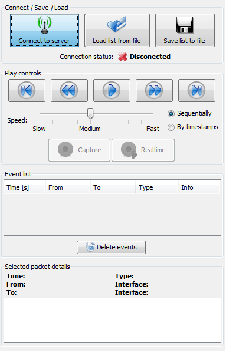
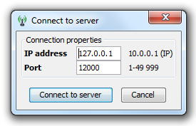
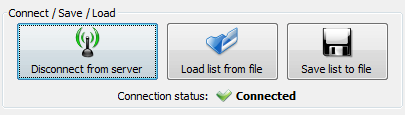

Press the Connect to server button in the control panel:
Fill in the IP address and MAC address of network simulator and hit the Connect to server button:
If everything is correctly set up, this programm will connect to network simulator (PSImulator) and in the control panel will appear Connection status: Connected:
Next part of this tutorial is: Event recieving, moving in event list.